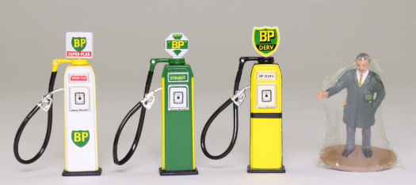
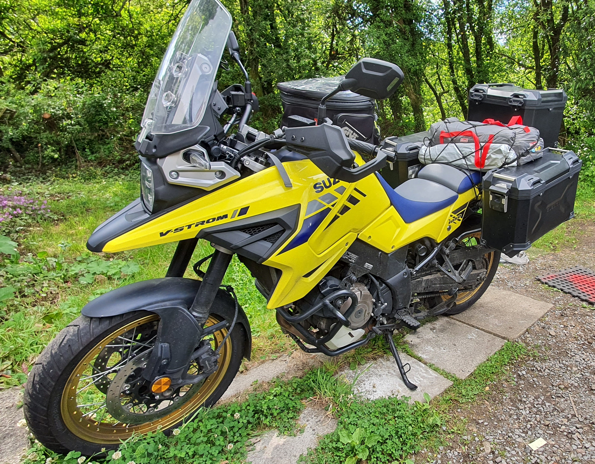

04 · Working life
Jobs, uniforms & old computers
The Army, Radius, BP and CGI: the work changed, the technology changed, and so did I.
One life · many roads
A personal journey through the bikes I rode, the cars I drove, the jobs I worked and everything that happened along the way.


The long way round
Born in the summer of ’65, raised in the Welsh Valleys, then out into the Army and a working life that kept changing gears.
The dates occasionally wander and memories overlap—but that is part of the story.
1965 onwards
From a wooden bungalow in Tredegar to the freedom, scrapes and stories of growing up in Llangeinor.
Picture it: the summer of ’65. The sun must have been shining, and I made my grand entrance into the world.
Go back to the start →Two wheels
From a little two-stroke Suzuki to mile-munching Triumphs and modern adventure bikes. Each one opens a different chapter.
Four wheels
Practical runabouts, family workhorses and the occasional dream machine—every one of them carried a story.

04 · Working life
The Army, Radius, BP and CGI: the work changed, the technology changed, and so did I.

05 · Further afield
Journeys worth remembering, places worth returning to, and the pleasure of seeing what is around the next bend.
“The timeline will be fluid at times—with overlaps, repeated stories and a few gaps. That’s memory for you.”A note from Steve